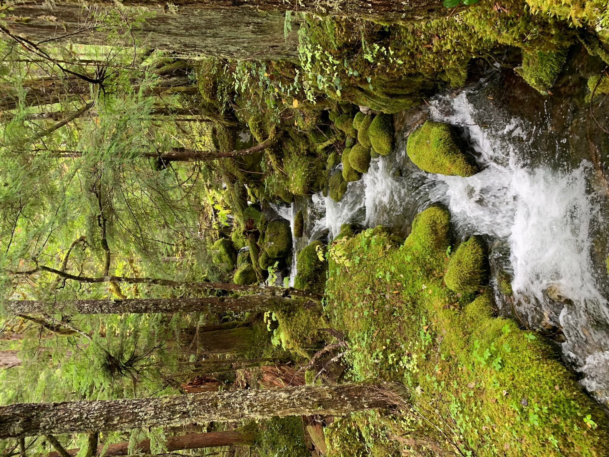
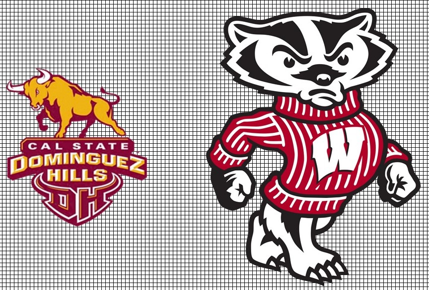
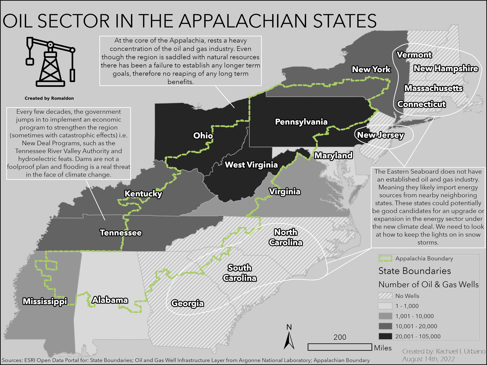
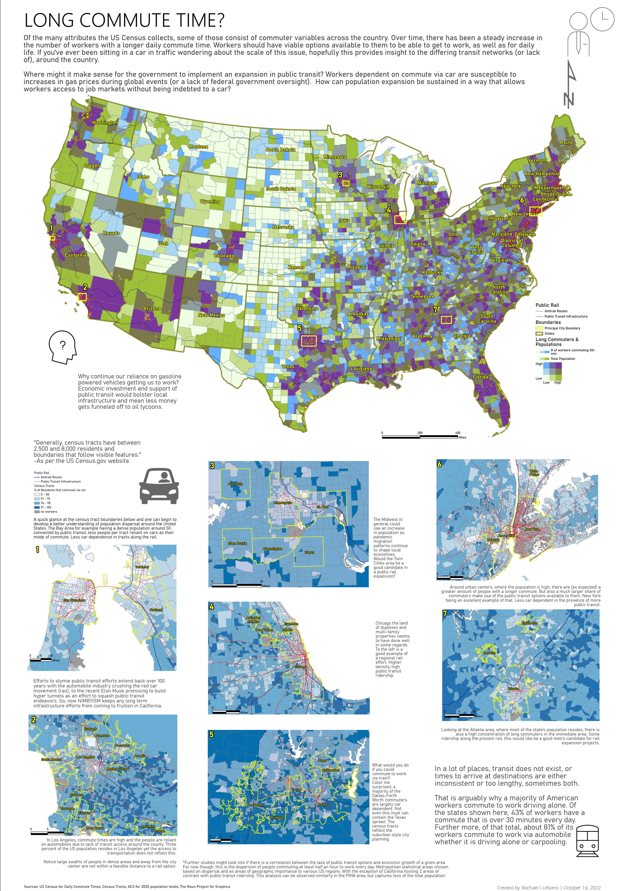
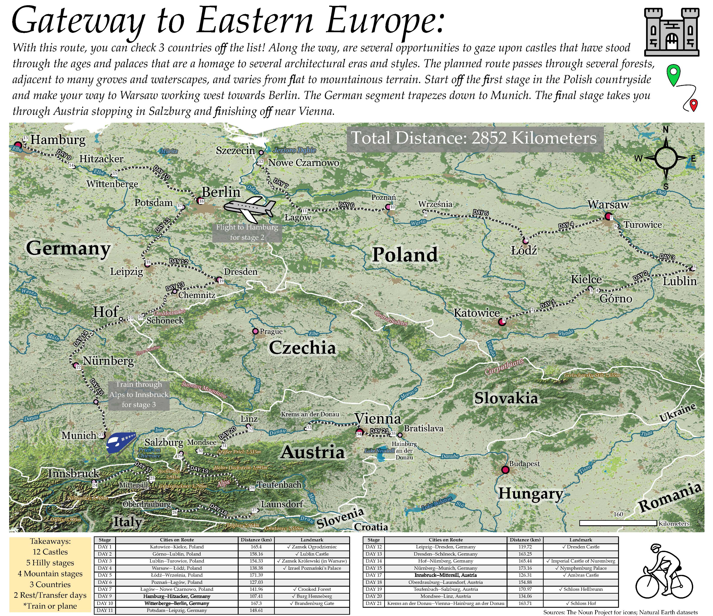
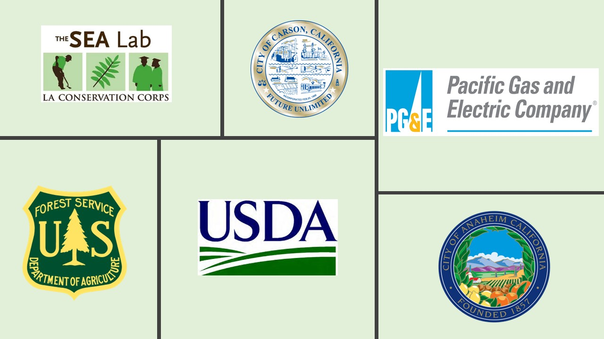
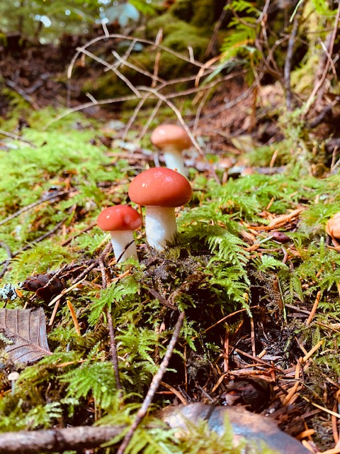
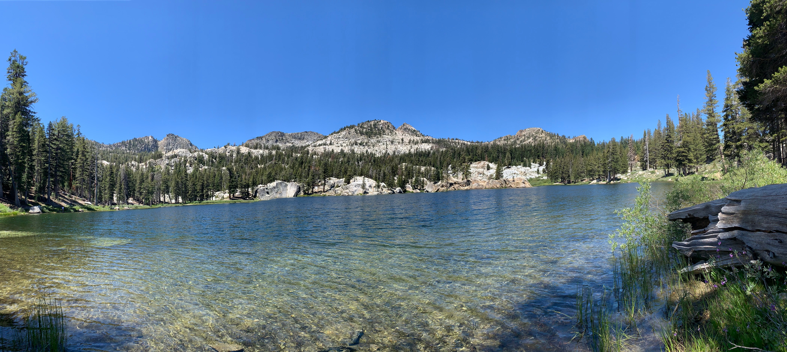
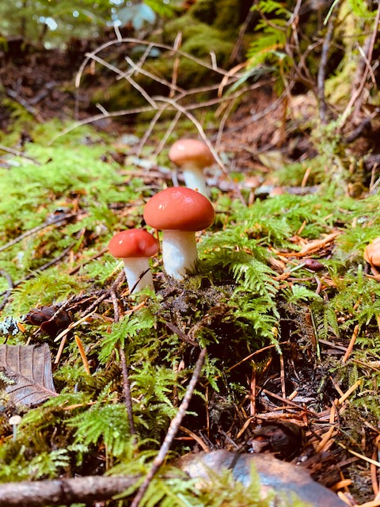
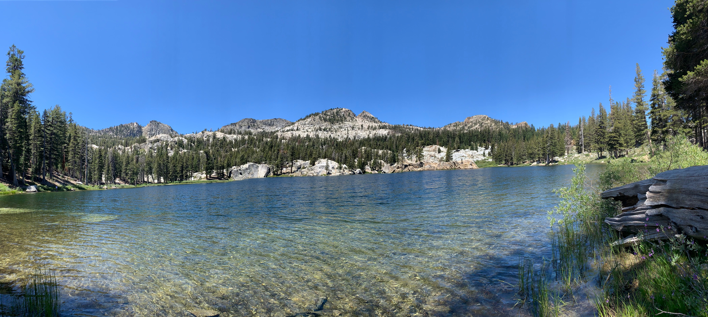

California Geographer
Cartographer
Rachael I. Urbano
Who is this person?
I, am an aspiring master's student, who's goal in life is to make a meaningful impact and live a lifestyle I can be proud of.
If you don't feel like reading, or hate small-talk... just hop on over to a separate part of this site, using the navigation bar.
I hail from Fresno, California. I spent the later half of my childhood in the foothills outside of Yosemite National Park. Being so close to the Sierra Nevadas my bond with nature started at a very young age. A lot of times outdoors, and often times, wandering to look at things that caught my eye off trail and occasionally some roller hockey.
I relocated to Los Angeles (post 2008 recession), which allowed me to do something I had always dreamed of: living in a big city, working at an aquarium and going to university! During my time as an undergrad at CSU Dominguez Hills, I gained my first internship as a GIS intern at the local city office. This was the start of my path that allowed me to evolve into the geographer I am today. I have been a remote worker a little over 3 years.
What most of my day to day work looks like:
GIS ANALYSIS (Data extraction)
PROGRAMMING (Python, SQL, lil bit o' HTML/CSS)
MEDIA CREATION (Map Products, Adobe , data tables)
Meanwhile the work shakes down to this:
Years of Experience
Projects Annually
Customers Served
Meeting Hours
Education
 Master of Science—Cartography & Geographic Information Systems Development, University of Wisconsin, Madison — May 2022 to present
Bachelor of Science—Earth Science, California State University, Dominguez Hills — January 2016 to August 2019
SAMPLE WORK

Oil Sector in the Appalachia
Simple choropleth map showing the distribution of oil & gas wells in states that the Appalachian Trail or Mountains pass through. This hopefully sheds light on energy security around the US. Where is the largest concentration of natural resource extraction in this region?

Commute Times in the USA nation in need of better transit
This map shows the combined statistic of commuter times across the country, with a majority of commuters (that is, people going to work across all transportation types) having a commute over 30 minutes daily, and an overwhelming majority commuting by automobile. Life is special, time shouldn't have to be spent in traffic. People shouldn't have to be indebted to cars. Where do you think there could be a boost in public transit?

Mock Bicycle Route to Central Europe Promoting healthy lifestyles!
Bike across Europe? Who wouldn't want to? Explore Europe by means of travel on a route between Medieval Castles. Originally the plan was to map across all of Europe, but we had to settle for Germany, Poland and Austria, as there were some constraints. This map makes use of Adobe to create a unique land cover raster. This is a whole lot of grassy plains and countryside next to the Alps.
A lot of thought goes into planning when visiting a foreign country, let this map inspire you to visit the road less taken!
WORK EXPERIENCE
If you are interested, my resume in full detail is available for download. Here are some of the companies I have worked for.

Pacific Gas & Electric (PG&E) —
Initially this was a contract position that turned into a full time career track.
Currently assisting in the ongoing effort to transition the Enhanced Vegetation Management data into the salesforce work system. I regularly provide geospatial visuals that help teams make decisions whether it be key stakeholders, regulatory agencies, or mandatory compliance. I perform a good amount of ad-hoc and reoccurring requests for kmzs, gdbs, and sql tables. I often make use of Python for automated workflows.
City of Anaheim —
Here is where I mostly developed and managed a lot of city: workflows, applications, sites pages, and performed spatial analysis for inter-department needs.
I spent a good amount of time working with raster data, including 3D models. Mapping the hillside of the city made use of lidar data. One of my favorite project was creating the vector tiles for the Anaheim PD basemap (used in patrol cars).
Water Resources Policy Institute —
On a grant by the USDA, WRPI is a consortium of the California State Universities geared towards finding solutions and carrying out research water related fields. Analysis sought to display the discrepancies, as well as question the existing bureaucracies that manage the water supply in this region. California is straddled with drought and overpumping of water all over the state. This position was my transition into a GIS Analyst.
USFS —
Working as a Field Ranger on the Angeles National Forest at the Los Angeles Gateway District. Supported recreation department by completing GPS surveys and use of GIS to create burn perimeters of recreation sites affected by previous fires. Provided outreach services to various department efforts around the forest, not limited to conservation efforts and community events.
City of Carson —
I was a technician here. I recall a lot of georeferencing old floodplain imagery. But I also maintained sign inventory for various DoT projects generating revenue for the city(handicap placards, stop signs, speed bump signs).
Created and maintained geodatabase features such as SCE electrical lines (including substations near the ports and rails in the city), variety of water lines for various water companies, oil lines, and other infrastructure (nearby port). I submitted a 3D underground map of the city of one of the most extensive areas under a major street. I'm talking power lines, oil pipelines, and water lines. :| That map made it to the 2nd round at the ESRI UC in 2017.
SEA Lab —
Working with the West Basin Municipal Water District in El Segundo, California, as part of the L.A. Conservation Corps, I taught water conservation and environmental stewardship to schools and groups throughout Los Angeles County. The other portion of my time, I led field trips and outreaches that helped Angelenos gain a better understanding of the ocean, often times by use of traveling tidepool, aka we brought the ocean to people's neighborhoods!
PASSIONS
 



Contact Me
If anything featured in this portfolio has caught your eye, or you have any questions regarding my experience, work, or availability please, send an email.
Los Angeles, California, United States
Email: rurbano@wisc.edu
Here I am working on a city council map before the world went upside down in 2020. You can click it to see my linkedin if you're curious.